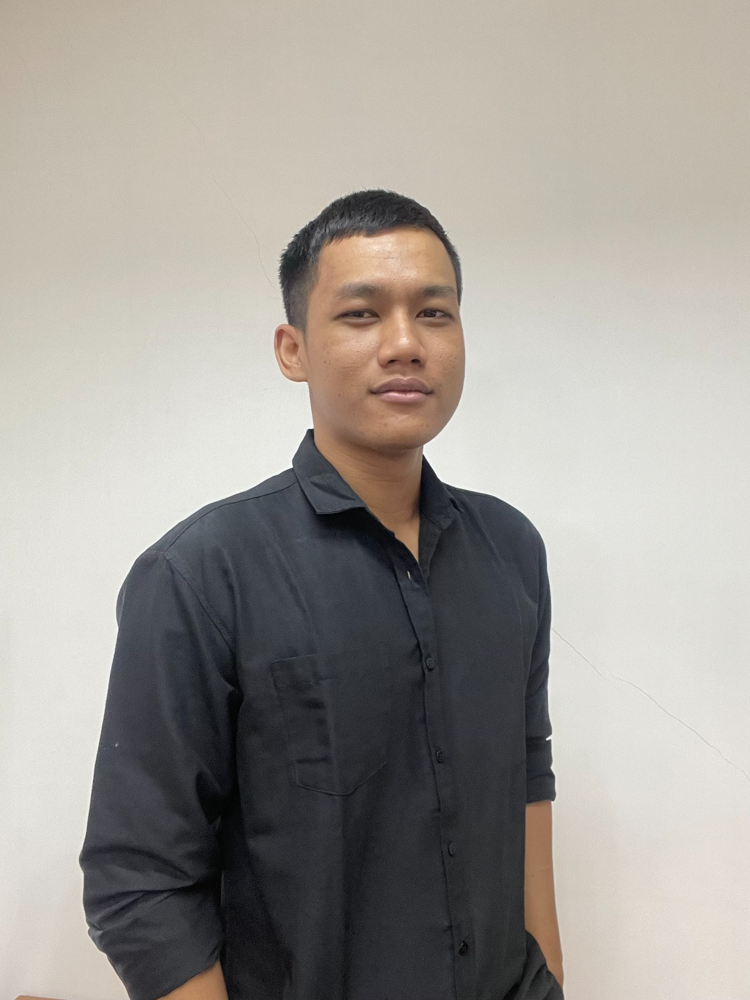

Halo! Saya adalah seorang Front End Engineer dengan pengalaman lebih dari 4 tahun dalam mengembangkan antarmuka pengguna untuk berbagai platform, mulai dari web, desktop, hingga mobile. Saya memiliki spesialisasi yang kuat dalam ekosistem React, terutama React Native dan Next JS. Fokus utama saya dalam setiap pengembangan adalah memastikan performa aplikasi yang tinggi serta merancang skalabilitas kode yang baik agar mudah dipelihara di masa depan.
Selain berfokus pada sisi front-end—yang juga mencakup pengalaman saya dengan kerangka kerja Vue JS dan bahasa TypeScript—saya terbiasa mengintegrasikan otomatisasi untuk mendukung berbagai kebutuhan bisnis yang kompleks. Lebih dari itu, saya juga memiliki kapabilitas Full-Stack dengan penguasaan di sisi back-end menggunakan Laravel. Kemampuan ini memungkinkan saya untuk memahami arsitektur aplikasi secara menyeluruh (end-to-end) dan berkolaborasi dengan tim secara jauh lebih efektif.
